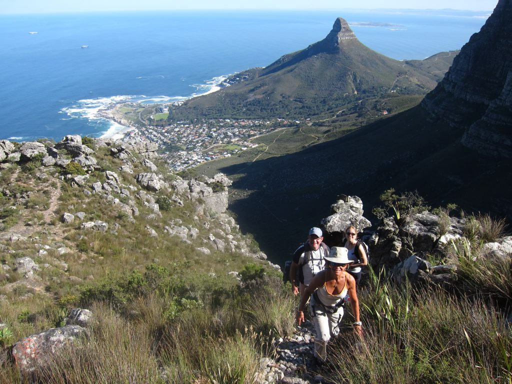
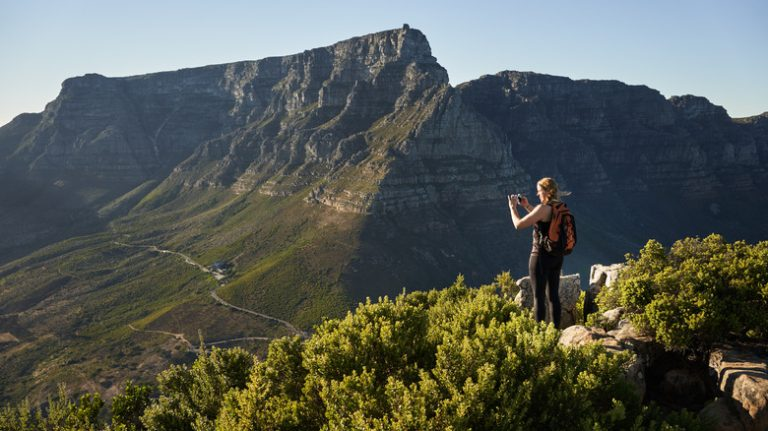
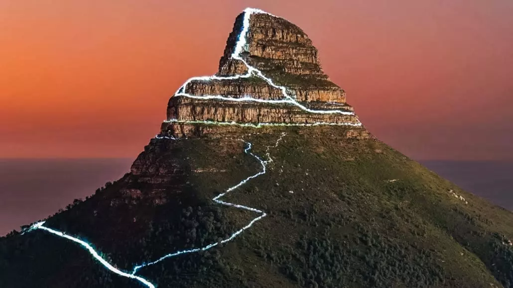
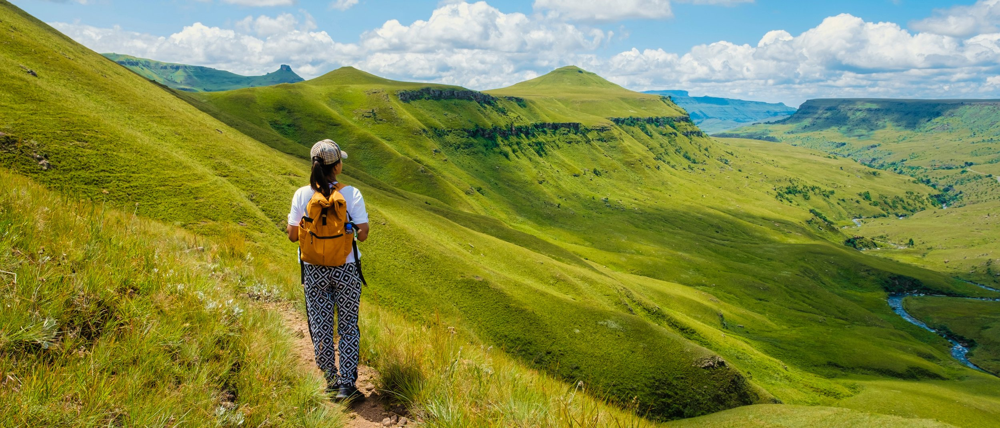

Table Mountain, one of the most iconic landmarks in South Africa, offers some of the most breathtaking hiking experiences. Located in Cape Town, it stands at 1,085 meters (3,563 feet) above sea level, offering stunning panoramic views of the city, the Atlantic Ocean, and the surrounding landscape. Hiking Table Mountain is a must-do for outdoor enthusiasts, with several popular routes catering todifferent levels of fitness and experience. Once at the summit, you can explore the plateau, enjoy the diverse flora and fauna, or simply relax and take in one of the world’s most spectacular views.
The Devil’s Peak hike is a popular and rewarding trail in Cape Town, offering panoramic views of the city, Table Mountain, and the surrounding coastline. Rising to 1,000 meters (3,280 feet), Devil’s Peak is part of the Table Mountain range and is known for its dramatic cliffs and stunning vistas. The hike is known for being moderately challenging, and it typically takes about 4 to 6 hours to complete, depending on the route you take and your fitness level. There are several starting points for the hike including Tafelberg Road Route, Mowbray Ridge Route, Noble Peak Route
Lion’s Head is one of Cape Town’s most iconic mountains, offering an exhilarating hike with incredible views of the city, Table Mountain, and the Atlantic Ocean. Standing at 669 meters (2,195 feet) tall, it is often considered one of the most accessible peaks in Cape Town, making it a popular choice for both locals and tourists. The hike to the top is relatively short but provides a combination of steep ascents, thrilling scrambles, and a chance to experience Cape Town’s stunning natural beauty.It offers a unique perspective of Cape Town, allowing you to enjoy the city’s beauty from above without committing to a long, difficult hike.
The uKhahlamba-Drakensberg is famous for its biodiversity, with unique flora such as proteas, aloes, and cycads, as well as a variety of bird species, including the endangered bearded vulture. The range also has a rich cultural history, with thousands of ancient San (Bushmen) rock paintings found throughout, giving hikers a glimpse into the lives of the region’s earliest inhabitants. Hiking in the uKhahlamba-Drakensberg range offers a blend of physical challenge, breathtaking scenery, and cultural history. From the jagged peaks and lush valleys to the ancient rock art sites, every trail tells a story of nature and history. Whether you're an experienced mountaineer looking for high-altitude challenges or a nature enthusiast seeking shorter scenic hikes, the Drakensberg is a destination that promises unforgettable experiences.
